46es / BUILD BOOK
부품을 보고, 한 단계씩.
조립서를 불러오는 중입니다. 아래 전체 설명도 이용할 수 있습니다.
01
이번에 사용할 부품 3D에서 위치 표시
앞 단계 / 주변 부품이번 작업작은 부품 위치선택한 부품2개 겹침잘린 면
참고 이미지 보기
전체 부품 · 준비 체크 · 검색
케이스·스위치·키캡·구매품은 참고 형상입니다. 배선은 3D 대신 배선 단계의 그림으로 보여 줍니다. 분해 간격과 화살표는 조립 설명용이며 실물 끼움·공차를 보증하지 않습니다.
r2 ACRYLIC → v5 PRINTED
무엇이 달라졌을까?
r2는 도면 윤곽을 복원한 비교용 모델입니다. 두께는 공칭값, 아래→위 P0→P5 적층과 설치 높이는 가정입니다. 제작용으로 쓰지 마세요.
비교 모델을 준비하고 있습니다.
r2 아크릴 · 6종 / 10조각
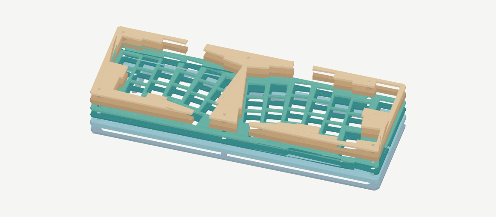
v5 현행 · 분리형 plate + 자석 커버
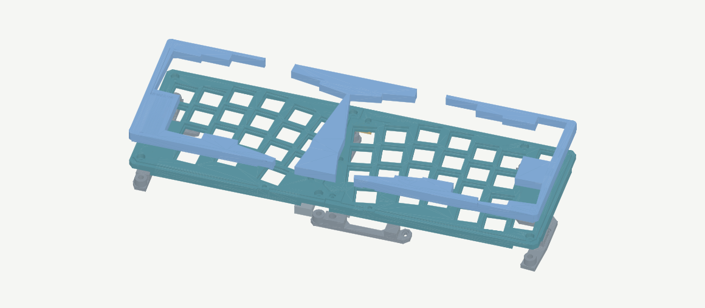
좌우 plate는 mount 받침 7곳에 놓입니다. 평면 커버는 L·T·R을 개별 탈착합니다.
46개 키 위치r2의 2D 키 배열이 기준
plate 구조r2 1.5T 판 → v5 좌우 분할·국부 걸쇠 층
커버 유지보수r2 적층 판 → v5 자석 탈착 3조각
복원 근거와 가정 · 모델 내려받기
좌표는 r2 P2 윗면과 v5 스위치 착좌면을 맞춘 비교 기준입니다. 하우징 설치 높이 비교가 아닙니다.
r2 비교용 STEP · 복원 근거와 파일 해시상세 설계 · 전체 조립 순서 · 시험 항목
근거 · docs/design.md · docs/validation.md · model/measurements.csv
요약
v5 변경+2.4 / +5.0 mm
r2처럼 세 조각 윗면을 평평하게 만들었다. 윗면 Z 19는 케이스 테두리 Z 14 기준 5.0 mm 위다. 기존 보스 자석 6개와 아래 다리 자석 2쌍을 사용한다. 키캡과 커버 창의 최소 여유는 1.0 mm, 4 mm 눌렀을 때 plate와의 간격은 0.3 mm다.
출력 부품11개
mount 4개(좌·우 pair, 중앙, 앞), plate 2조각과 spine, 컨트롤러 브래킷, 커버 3조각이다. mount의 일체형 받침 7곳이 plate 밑면에 닿는다. plate 뒤 가장자리의 다리 3곳은 케이스 뒤 벽 보스 위에 패드를 사이에 두고 얹힌다.
출력 공차 가정±0.3 / ±0.4%
JLC3DP MJF PA12S 치수 공차(100 mm 이하 / 그 이상). 커버의 8001 투명 레진은 ±0.2 / ±0.3 %. 설계 여유 0.15–0.7은 이 공차로 보장되지 않아 주문 1 시험으로 확인한다. 최소 벽은 MJF 1.0, 레진 0.8이고, 출력 세트 18개(주문 1 11개 + 주문 2 7개)의 벽은 모두 1.0 이상이다.
지금 할 일
- 평면 커버, 키캡 여유 1.0 mm 및 보강 mount를 이 페이지와
model/46es_assembly_review_v5.sc에서 확인한다. 주문 2 파일은model/print_v5/order2/에 내보냄 - 주문 1(시험): B 쿠폰, 보스 탭(투명 레진), 이음 쿠폰 3쌍(S0·S1·S2), mount 4개, 스냅 브래킷 B와 시험편 A·C, 뒤 받침 블록 3종. 파일은
model/print_v5/order1/ - 구매품: 흑색 탄소강 M3×4 버튼헤드, M3 6 mm 지지대(맞변 5), Ø3×2 자석 10개 + 예비(흑색 코팅이면 좋음), M2 저두 나사·너트, 투명 2액형 에폭시
- 주문 1 시험 결과를 v5 CAD에 반영(아래 「주문 1 시험」). plate 치수는 이 결과로 주문 2 전에 정한다
- 주문 2(본 세트): plate 2, spine, 브래킷(MJF PA12S 검정), 커버 3(8001 투명 레진) —
model/print_v5/order2/(v5 평면 커버·upper 1.7·다리 자석 포켓)
근거 · docs/design.md · docs/validation.md · model/measurements.csv
구조
- Z 11.5–19평면 커버 3조각(L·T·R) 평평한 윗면 Z 19, 본체 6T. 밑면 보스(Ø5.4)가 plate 카운터보어(Ø6)에 꽂히고 자석이 M3 나사머리에 붙는다. L·R 아래 다리 끝의 자석 포켓 위 살은 3.9 mm다. 키캡과 창 사이에는 1 mm를 확보했다.
- Z 8–13plate 2조각. X 130.881 부근에서 좌·우로 나눴다. 3층 구조(위 1.7 = 16.5 개구, 가운데 1.5 = 14.0 홀, 아래 1.8 = 릴리프. v5: 위층 2 → 1.7, 스위치 착좌 Z 11.3)와 46키 배치는 원본과 같다. 두 조각을 합친 외곽은 285.8 × 95.3이다. 앞 이음: 왼쪽 조각 윗면 쪽 2.4가 곧은 반턱 tab으로 나와(끝 X 147.4) 오른쪽 조각의 위가 열린 포켓에 위에서 얹히고, M2×5 1개와 너트로 조인다(SO6 오른쪽, 커버 T 조각 아래). tab 옆면과 끝의 걸림 턱이 여유 0.15로 위치를 잡는다. 너트는 오른쪽 조각 아랫면의 닫힌 육각 포켓(맞변 4, 깊이 1.3)에 눌러 끼워 둔다. 뒤 받침 블록: 뒤 가장자리 플랜지는 PSD60 뒤 벽 보스 ①②③ 위에 붙인 별도 블록 3개(14 × 4 × 4.5, 왼쪽 조각 아래 2, 오른쪽 1)에 얹힌다. plate에는 다리가 없다(출력 높이 8). 블록 밑의 공칭 틈 0.5은 블록을 보스에 붙이는 점착 패드 자리이고, 높이는 주문 1의 3종에서 고른다. 보스 ④는 우 mount 뒤 모서리 밑이라 블록이 없다. 보스 위치·지름은 제품 사진에서 추정했고 윗면 높이는 지지대와 같다고 가정했다(실측 M22).
- Z 3.05–8.5spine. 두 조각 이음부 밑(Y 38–87)에서 M2 4개로 plate를 잇는다(폭 4). 줄기 밑면이 중앙 mount(Rear) 프레임 윗면 Z 3에 0.05 틈으로 얹혀 Y 43–83 구간을 받친다(따로 둔 받침 없음, H02 케이스 나사머리 위만 Z 4로 비움). 줄기 아랫면에 배선 홈 3곳(Y 49·64·72, 폭 3 × 높이 2.95)이 있다.
- Z 0–8컨트롤러 브래킷. Pro Micro 브래킷은 별도 부품으로 plate 왼쪽 아랫면에 M2 2개로 단다(배선하지 않는 1–4번 핀 구역, 패드 두 줄 사이). PCB는 나사 없이 잡는다. +X 끝을 끝 립 아래로 넣고 USB 쪽을 누르면 양옆 탄성 암(길이 9, 두께 1.0)의 립이 PCB 긴 변 아래로 0.4 걸린다. USB 양옆 모서리 턱이 뽑는 힘을, +X 끝 벽이 꽂는 힘을 받는다. 지붕은 패드 두 줄 사이 띠로 좁혀 배선이 옆으로 빠진다.
- Z 2–8육각 지지대 6개. M3 암-암 관통 6 mm, 맞변 5. mount 육각 포켓(맞변 5.4, 깊이 1)에 앉고, 위는 M3×4, 아래는 M3×5로 잡는다.
- 받침 윗면 Z 8mount 4개. 좌 pair(H05·H01 ↔ SO1·SO2), 우 pair(H06·H04 ↔ SO5·SO4), 중앙(H02 ↔ SO3, spine이 프레임에 얹힘), 앞(H03 ↔ SO6, 컨트롤러 앞을 지나는 69.8 mm). 케이스 나사 자리는 방향별 장공이다. 일체형 받침 7곳이 plate 밑면에 닿는다. SO1–SO6 체결 홀 외곽은 맞은편 면 사이 8.5 mm의 팔각형이다. Rear는 plate 받침 1곳과, spine 줄기 밑면(Z 3.05)이 얹히는 프레임 윗면 Z 3을 쓴다(spine 받침 없음). 핀 회피부는 스위치 배열에서 계산해 좌 10·11, 우 18·33·46 위치에 둔다.
- Z 0 기준PSD60 하우징 지지대 상면. 좌표 원점은 GH60 PCB 기준점(앞·왼쪽)이고 타이핑 경사는 뺀 값이다.

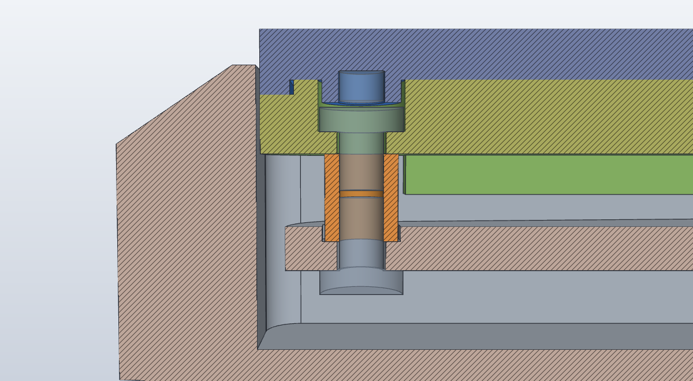

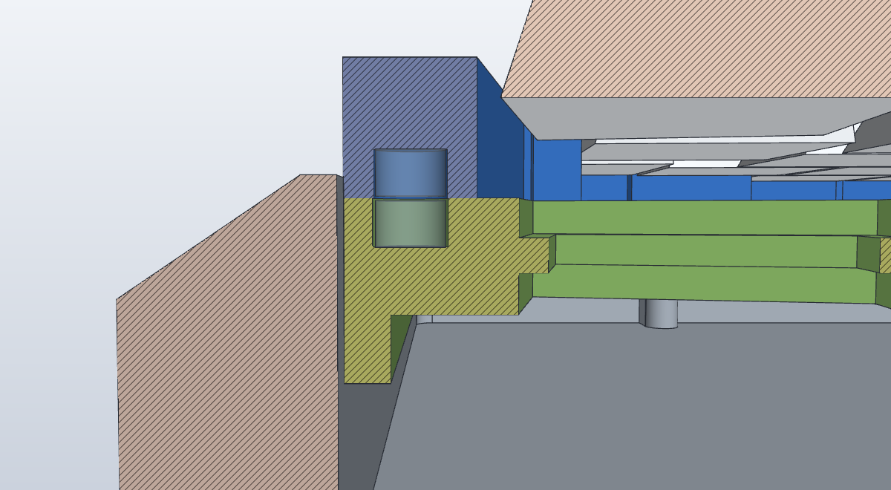

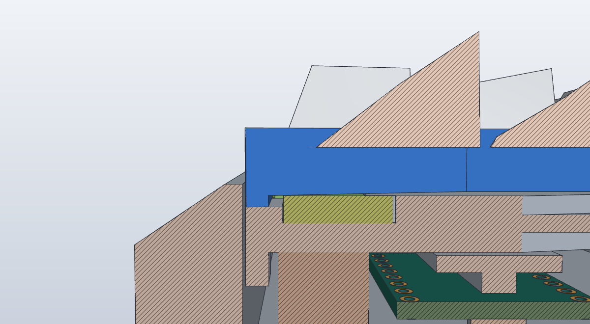

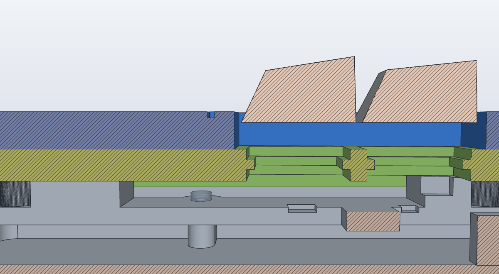

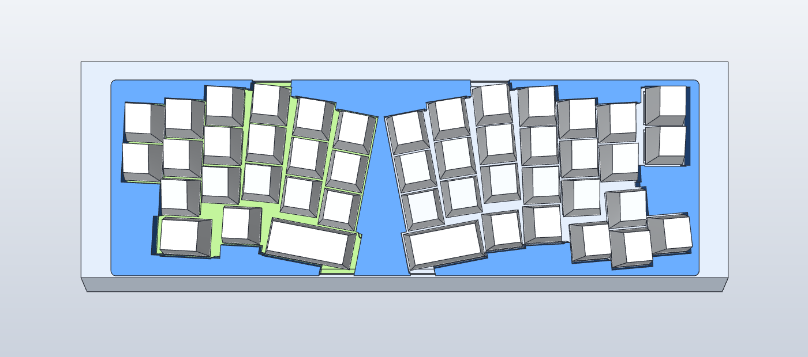

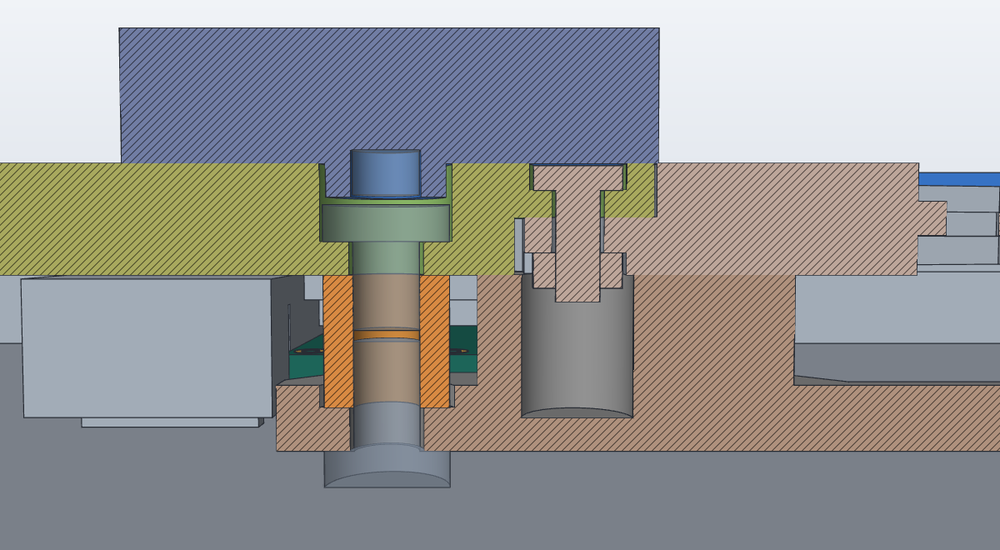

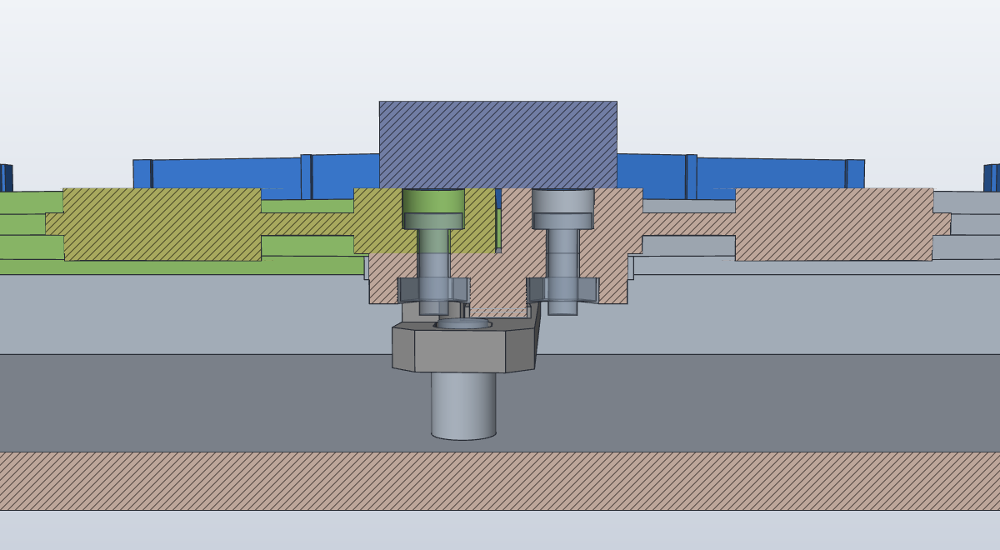

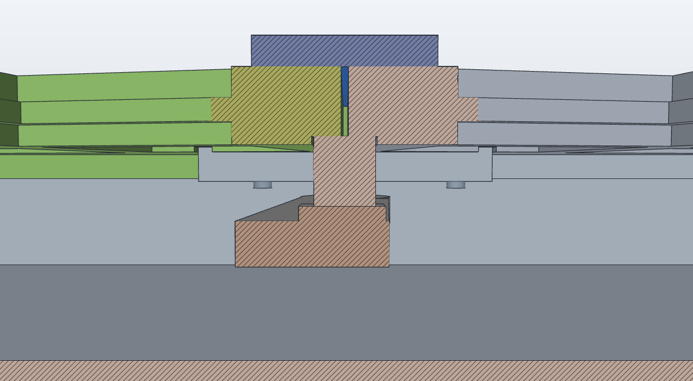

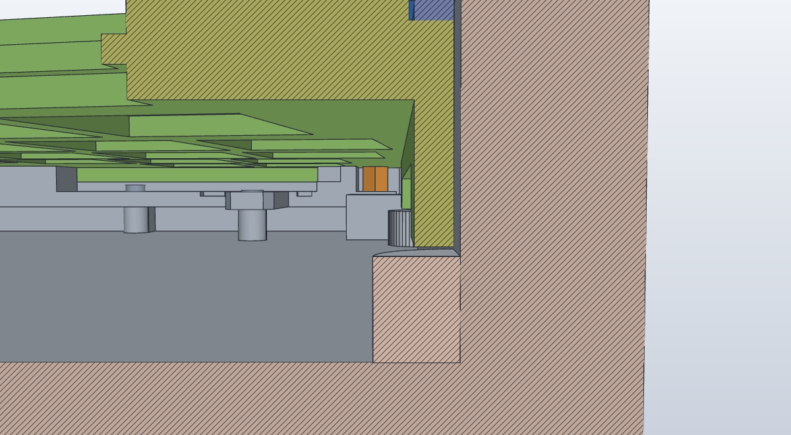

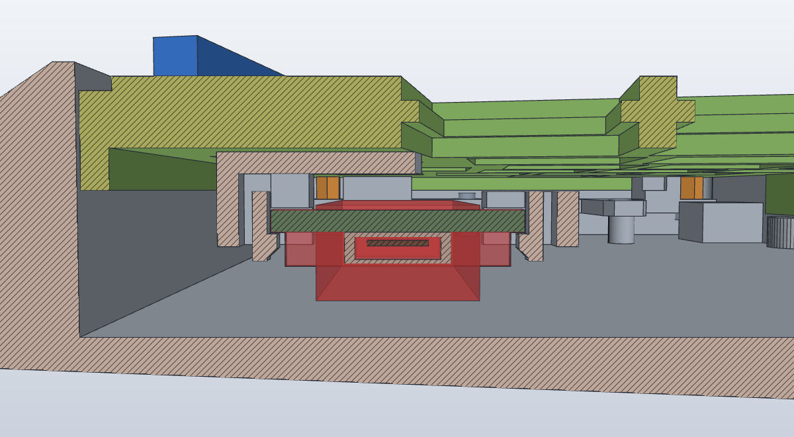
근거 · docs/design.md · docs/validation.md · model/measurements.csv
맞춤 검토
plate는 기준 부품이다. 어긋남은 mount·spine·shim·구매품과 조립 순서로 흡수하고, plate는 다시 출력하거나 깎지 않는다. plate에 걸린 치수(홀·카운터보어·이음·외곽 틈)는 주문 1 결과로 주문 2 전에 CAD에서 정한다.
판정은 JLC 규격 최악값과 모델 여유를 비교한 것이다. 지지대 간격과 plate 조각 행의 최악값은 이 페이지를 만들며 계산했다.
| 맞닿는 곳 | 최악 어긋남 | 설계가 흡수하는 양 | 판정 | 안 맞으면 |
|---|---|---|---|---|
| 케이스 ↔ mount케이스 나사 6 | 0.931차 대략 실측 H 위치와 GH60 채택 좌표 차이 최대(H03 Y). 정밀 실측은 하지 않기로 했다(2026-11-05) | ±1방향별 장공: H01·H05는 X, H02·H03·H04·H06은 Y. M2 기준 지정축 약 ±1.2, 직교 ±0.2. H05는 ±0.9 | 주문 1 mount로 확인 | 장공을 줄로 늘리거나 그 mount만 다시 출력 |
| mount ↔ platepair 하나의 지지대 2개 | 0.6좌 pair SO1↔SO2 81.4, 우 pair SO5↔SO4 약 87. 두 부품 ±0.3씩 | 0.4plate M3 구멍 Ø3.4(편측 0.2) × 2. 중앙·앞 mount는 지지대가 1개라 해당 없음 | 부족할 수 있음 | mount 쪽 육각 포켓을 그 방향으로 줄로 넓히거나 mount만 다시 출력. plate 구멍은 건드리지 않는다 |
| plate 좌 ↔ 우 ↔ spine | ±0.55조각 길이 약 137 × 0.4% | 0.15–0.5앞 이음 tab ↔ 포켓 옆면·걸림 턱 0.15(tab 끝 0.3), spine 이음 맞춤 X 0.15, 뒤 Y 0.4, 조각 사이 0.5. M2 구멍 Ø2.4 | 이음 쿠폰 | tab 여유와 너트 포켓 맞변은 주문 1 이음 쿠폰 3쌍(S0 옛 dovetail, S1 현행, S2 넓힌 여유)으로 주문 2 전에 정한다. 조립 때 tab(plate)은 깎지 않는다. 헐거우면 에폭시로 채운다(조립 11). spine은 다듬거나 spine만 다시 출력 |
| spine ↔ 중앙 mount 프레임 | 0.05공칭 틈. 출력 오차는 포함하지 않음 | shim 0–0.1절연 박판 | 현물 맞춤 | shim 두께를 바꾸거나 spine 밑면을 사포로 |
| 하우징 벽 ↔ plate 외곽 | 약 1.0조각 길이 오차 약 0.55 + 조립 위치 0.5 | 0.3외곽 틈. 정리 전 plate 보호 변형은 0.8 | 부족할 수 있음 | 닿는 쪽 mount를 케이스 나사 장공 안에서 반대로 옮긴다(조립 04–08). plate 가장자리는 깎지 않는다. B 쿠폰 외곽으로 잰 축척으로 주문 2 전에 외곽 틈을 다시 정한다 |
| 컨트롤러 브래킷 ↔ 앞 mount | — | 1.39모델 최소 간격 | 여유 있음 | — |
| USB 아웃렛 ↔ 좌 pair | 글루r2에서 쓰던 아웃렛이 이미 케이스에 핫멜트로 붙어 있다 | 1.02가정 점유 기준 최소 거리 | 현물 확인 | 글루 덩어리는 조립하며 깎는다. 지지대 높이를 넘지 않는다(사용자 확인) |
| 위 M3 머리 ↔ 카운터보어 | Ø5.7 | 반경 0.15Ø6 카운터보어 | 공차 보장 아님 | B 쿠폰 행 D에서 머리가 걸리면 주문 2 전에 CAD 카운터보어를 키운다. 조립 때 plate를 넓히지 않는다 |
| 커버 보스 ↔ 카운터보어 | Ø5.4 | 반경 0.3 | 여유 있음 | B 쿠폰 결과로 보스 지름을 정하고 그 커버 조각만 다시 출력 |
| 스위치 46 ↔ 14.0 홀 | 홀 ±0.4홀 층은 16.5 개구 위로 1.25 돌출 출력 | B 쿠폰 행 C13.7–14.3, plate와 같은 출력 방향 | 시험 전 | B 쿠폰 행 C로 주문 2 전에 홀 크기를 정한다. 조립 때 홀은 깎지 않는다. 빡빡한 스위치는 다른 스위치로 바꿔 보고, 헐거우면 배선이 잡아 주므로 그대로 둔다 |

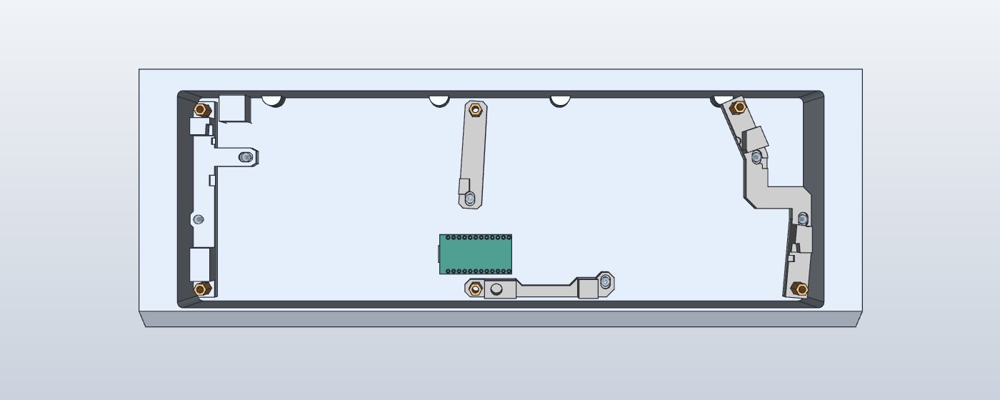

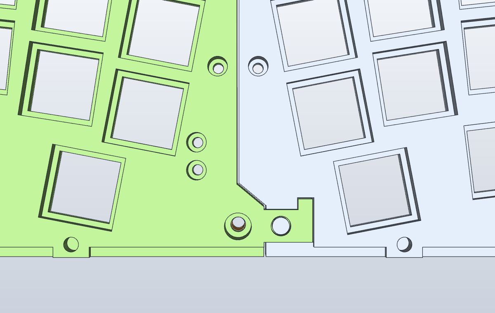
근거 · docs/design.md · docs/validation.md · model/measurements.csv
열린 항목
검토 0 / 0
- v5 결정
upper plate 1.7: 키캡 바닥 눌림 여유를 r2보다 0.3 늘림
r2는 같은 16.5 개구에 2T upper plate를 쓰고, 키캡을 끼우면 유격이 거의 없지만 작동한다(사용자 확인). 출력 공차 위험을 지지 않도록 v5 상부층을 1.7로 줄였다(사용자 결정). 착좌가 Z 11.3으로 0.3 올라가고, 14.0 홀 층 1.5는 그대로다. 2차: 참고 키캡을 r2 근거로 착좌 + 6.0(스커트 밑면 Z 17.3)에 올려, 4 mm 눌림 ↔ plate 윗면 0.3 여유를 실제 검사로 바꿨다(겹침 0, 최소 0.300). 주문 1 B 쿠폰 행 C도 1.7로 바꿔 다시 내보냈다(
SMP_upper1.7, 부피 불변, 홀 층 Z 6.8–8.3). - v5 확인
커버 돌출은 테두리 Z 14 기준 5 mm
r2는 체결 상태에서 테두리 위로 최소 3 mm 돌출한다. v5 평면 윗면은 Z 19로, 대략 실측 테두리 Z 14 기준 5 mm 돌출한다. 실제 돌출은 케이스 테두리를 측정해 확인한다.
- v5 확인
앞·뒤 좁은 베젤의 강도와 휨
키캡 여유 1.0 mm를 유지한 상태로 앞·뒤 창 모서리의 좁은 베젤을 남겼다. 평면 커버 출력 후 좁은 부위의 강도와 휨을 확인한다.
- v5 조립
다리 자석은 극성이 있다
기존 6개는 강철 나사머리를 당겨 극성이 없지만, 다리 자석 2쌍은 자석끼리 붙는다. plate 쪽을 먼저 붙이고, 짝 자석을 그 위에 붙인 채로 방향을 표시해 커버 포켓에 넣는다(조립 02).
- v5 결정
위 다리 끝에는 자석을 넣지 않는다
위 다리 끝은 실루엣 창(키캡 여유 1 mm) 뒤 폭이 2.5–2.8이라 Ø3.2 포켓과 벽 1.0(합 5.2)이 들어가지 않는다. 가장 가까운 자리도 끝에서 약 23 mm다. 사용자 결정(2026-11-06)으로 아래 다리에만 넣는다. 위 다리는 두께 6 레진으로 v4(2)보다 단단하다.
- 위험
배선이 plate 밑 8까지 내려온다
실측(M14)에서 배선은 plate 밑면부터 8 mm 내려왔다. 배선은 plate와 맞닿는 mount 받침 7곳을 피해 통과시키고, spine을 건너는 행 배선에는 Y 49·64·72 홈을 사용한다.
- 위험
긴 앞 mount(H03–SO6, 68.6 mm)
케이스 나사 1개와 지지대 1개를 잇는 가장 긴 어댑터다. 굽힘과 층간 파손, 반복 탈착 후 들뜸을 국부 시험에서 가장 먼저 본다.
- 확인
앞 이음은 나사 1개
앞 이음 자리는 앞 모서리부터 커버 창까지 약 8 mm뿐이고 그 뒤 아래에는 브래킷이 있어 M2를 하나만 넣었다. 대신 tab을 X로 길게 하고 끝에 걸림 턱을 두어 벌어짐과 면내 회전은 tab이 맡는다(2026-11-10). 이음 바로 아래는 Front mount 받침이, 오른쪽 조각 앞부분은 브래킷 지붕이 받친다. 접착 여부는 가조립 뒤 누름 시험으로 정한다(조립 11).
- 확인
pair의 지지대 간격 흡수 0.4 < 규격 최악 0.6
좌·우 pair는 지지대 2개가 한 부품에 있어 서로 움직이지 않는다. plate 구멍 여유로 0.4까지만 흡수된다. 넘치면 mount 쪽을 고친다.
- 확인
중앙 처짐과 shim
둘레 프레임이 없어 전체 강성이 plate와 spine에 더 의존한다. spine 밑면과 Rear 프레임 윗면 사이 틈 0.05을 shim으로 맞춘 뒤 눌렀을 때 들뜸과 휨을 본다.
- 확인됨
USB 아웃렛은 r2 그대로
r2에서 쓰던 inside 케이블(C 암 아웃렛 ↔ Pro Micro 플러그)을 그대로 쓴다. 아웃렛은 이미 케이스에 핫멜트로 붙어 있어 홀더 없이 점유 영역만 둔다. 글루 덩어리가 좌 pair(여유 1.02)에 닿으면 조립하며 깎는다.
- 확인
H05 조정 끝의 남은 살 약 2.0
H05는 머리 자리 없이 X ±0.9 조정한다. 조정 끝에서 체결할 때 살이 깨지지 않는지 본다.
- v5
커버를 들어 올릴 손톱 여유
윗면은 대략 실측 테두리보다 5 mm 높고, plate에 닿는 밑면 Z 13은 테두리보다 1 mm 낮다. 실제로 커버 가장자리를 잡아 들어 올릴 수 있는지 확인한다.
- 구매
보유 나사·지지대는 그대로 못 쓴다
보유(r2) M3 나사는 자석에 붙지만 접시머리라 버튼헤드 자리에 맞지 않는다. 머리가 구멍 모서리에 걸려 0.3–0.6 낮게 앉아 자석 틈이 벌어지고, 길이도 5만 들어간다. 보유 5 mm 지지대는 맞변 4.33–4.5(r2 육각 구멍 기준)라 맞변 5.4 포켓 안에서 돌고 1 mm 짧다. 자석 Ø3×2와 함께 새로 산다(「부품과 구매품」).
- 업체
재료(검정 MJF · 투명 레진)와 업로드
2026-11-06에 재료·색을 바꿨다. plate·mount와 spine·브래킷·스냅 시험편·뒤 받침 블록·B 쿠폰·이음 쿠폰은 MJF PA12S-HP 검정, 커버 3조각과 보스 탭은 8001 레진 투명이다. 견적 화면에서 파일마다 재료를 고르고, 시험물은 대신하는 부품과 같은 재료·색으로 한다. 커버 주문 메모에는 받침을 보스 쪽 아랫면에만 두라고 적는다. 두 재료 모두 최소 크기 규칙에 걸리는 부품이 없다. 업로드 때 얇은 벽 경고가 뜨면
model/print_v5/README.md의 「재료·주문 메모」 절과 맞춰 본다. 남은 1.0 미만 값은 벽이 아니라 모서리 끝뿐이다. - 확인
케이스 나사 규격과 지지대 높이
호칭경 2만 기록됐다. 정밀 실측 대신 주문 1의 mount 4개를 실제로 케이스 나사로 고정해 길이·머리·유효 깊이와 지지대 높이 차이를 확인한다. 높이가 다르면 XY 장공으로 풀지 않고 접촉면 높이와 스페이서를 검토한다.
- 주문 대기
주문 1(시험 출력)
B 쿠폰·보스 탭·이음 쿠폰 3쌍·mount 4개·스냅 브래킷 3종·뒤 받침 블록 3종의 STL/STEP을
model/print_v5/order1/에 내보냈다. 결과로 홀 크기, 보스 여유, 이음 여유, 장공 범위를 정한 뒤 주문 2를 넣는다. mount 4개로 케이스 체결을 시험하고 통과한 부품을 본 조립에 사용한다. - 검토
plate 외곽 틈: 현행 0.3 ↔ 예전 보호 변형 0.8
정리 전 plate 보호 변형(태그
46es-pre-cleanup-2026-11-06)은 외곽 틈 0.8을 썼다. 현행은 0.3이다. 주문 1 B 쿠폰 외곽으로 축척 오차를 잰 뒤 주문 2 전에 정한다. 조이는 순서는 조립 03–08에 반영했다.
근거 · model/print_v5/README.md · tools/coupon_v5.py
부품과 구매품
| 출력 부품 | 수량 | 부피 | X × Y × Z mm | 출력 방향 | 내용 |
|---|---|---|---|---|---|
좌 mount pairMOUNT_L_PAIR_V3 | 1 | 3.9 cm³ | 30 × 90 × 8 | 자유(MJF) · STL은 밑면이 아래 | 주문 1 · H05·H01 ↔ SO1·SO2. USB 아웃렛을 피해 꺾인다 |
우 mount pairMOUNT_R_PAIR_V3 | 1 | 4.0 cm³ | 41 × 94 × 8 | 자유 · STL은 밑면이 아래 | 주문 1 · H06·H04 ↔ SO5·SO4 |
중앙 mountMOUNT_H02_SO3_MIN_V2 | 1 | 1.6 cm³ | 13 × 50 × 8 | 자유 · STL은 밑면이 아래 | 주문 1 · H02 ↔ SO3. spine이 프레임 윗면에 직접 얹힘 |
앞 mountMOUNT_H03_SO6_MIN_V2 | 1 | 2.2 cm³ | 69 × 11 × 8 | 자유 · STL은 밑면이 아래 | 주문 1 · H03 ↔ SO6. 굽힘·층간 확인 1순위 |
plate 왼쪽PLATE_L_SPLIT_V1 | 1 | 38.4 cm³ | 148 × 95 × 8 | 자유, 판을 수평으로 요청 · STL은 윗면이 아래 | 주문 2 · 3층. SO1·SO2·SO3·SO6 카운터보어, 앞 이음 tab · v5: 앞 가장자리 받침 + 다리 자석 포켓 Ø3.3. 뒤 플랜지는 받침 블록 ①②에 얹힌다 |
plate 오른쪽PLATE_R_SPLIT_V1 | 1 | 40.5 cm³ | 154 × 95 × 8 | 자유, 판을 수평으로 요청 · STL은 윗면이 아래 | 주문 2 · 3층. SO4·SO5 카운터보어, 앞 이음 포켓·너트 포켓 · v5: 앞 가장자리 받침 + 다리 자석 포켓 Ø3.3. 뒤 플랜지는 받침 블록 ③에 얹힌다 |
spinePLATE_SPINE_V1 | 1 | 1.8 cm³ | 30 × 49 × 5 | 자유 · STL은 윗면이 아래 | 주문 2 · M2 4개와 너트로 두 조각을 잇는다. 배선 홈 3곳 |
컨트롤러 브래킷CTRL_BRACKET_SPLIT_V1 | 1 | 1.6 cm³ | 36 × 26 × 8 | 자유 · STL은 지붕이 아래 | 주문 1(시험편 B)·주문 2 · plate에 M2 2개. Pro Micro는 나사 없이 끝 립과 스냅 암으로 잡는다. 주문 1에서 맞으면 그대로 쓴다 |
스냅 시험편 A·CCTRL_SNAP_TRIAL_A, CTRL_SNAP_TRIAL_C | 1 | 3.1 cm³ | 36 × 26 × 8 | 자유 · STL은 지붕이 아래 | 주문 1 · 브래킷과 같은 형상에 걸림만 다르다. A 얕게(암 0.25, 끝 0.7), C 깊게(0.55, 1.2) |
뒤 받침 블록REAR_REST_1_V5, REAR_REST_2_V5, REAR_REST_3_V5 | 1 | 0.8 cm³ | 14 × 4 × 4 | 자유(MJF) · STL은 밑면이 아래 | 주문 1 · 같은 형상 3개(14 × 4 × 4.5). 케이스 뒤 벽 보스 ①②③ 위에 패드로 붙여 plate 뒤 플랜지를 받친다 |
뒤 받침 블록 높이 변형REAR_REST_TRIAL_LO, REAR_REST_TRIAL_HI | 1 | 0.5 cm³ | 14 × 4 × 4 | 자유(MJF) · STL은 밑면이 아래 | 주문 1 · 각 3개. 높이만 다르다(4.2 / 4.8). 시험 조립에서 맞는 높이를 골라 그대로 쓴다 |
커버 LCOVER_L_DRAFT_TBD | 1 | 15.6 cm³ | 102 × 95 × 7 | 업체가 정함(레진, 받침은 보스 쪽 아랫면) · STL은 윗면이 아래 | 주문 2(v5 승인 후 다시 내보냄) · 8001 투명 레진 · SO1·SO2 보스 · 두께 6 · 아래 다리 끝 자석 포켓 Ø3.2 |
커버 TCOVER_T_DRAFT_TBD | 1 | 14.2 cm³ | 86 × 95 × 8 | 업체가 정함(레진, 받침은 보스 쪽 아랫면) · STL은 윗면이 아래 | 주문 2(v5 승인 후 다시 내보냄) · 8001 투명 레진 · SO3·SO6 보스 · 두께 6 |
커버 RCOVER_R_DRAFT_TBD | 1 | 15.8 cm³ | 129 × 95 × 8 | 업체가 정함(레진, 받침은 보스 쪽 아랫면) · STL은 윗면이 아래 | 주문 2(v5 승인 후 다시 내보냄) · 8001 투명 레진 · SO4·SO5 보스 · 두께 6 · 아래 다리 끝 자석 포켓 Ø3.2 |
이음 쿠폰 S1(현행 반턱)SEAM_COUPON_S1_L, SEAM_COUPON_S1_R | 1 | 3.7 cm³ | 29 × 22 × 5 | 자유, 판을 수평으로 요청 · STL은 윗면이 아래 | 주문 1 · L/R 한 쌍. plate 앞 이음과 같은 곧은 반턱·걸림 턱(여유 0.15), 닫힌 너트 포켓 맞변 4. M2×5 + 너트 1조로 조여 본다 |
이음 쿠폰 S0(옛 dovetail)SEAM_COUPON_S0_L, SEAM_COUPON_S0_R | 1 | 3.7 cm³ | 25 × 22 × 5 | 자유, 판을 수평으로 요청 · STL은 윗면이 아래 | 주문 1 · L/R 한 쌍. 대조군: 2026-11-10 이전의 dovetail tab(여유 0.15)과 이음면 쪽이 열린 너트 포켓(맞변 4.4, 깊이 1.0) |
이음 쿠폰 S2(넓힌 여유)SEAM_COUPON_S2_L, SEAM_COUPON_S2_R | 1 | 3.7 cm³ | 29 × 22 × 5 | 자유, 판을 수평으로 요청 · STL은 윗면이 아래 | 주문 1 · L/R 한 쌍. S1에서 위치결정 여유 0.25, 너트 포켓 맞변 4.2 |
부피와 크기는 모델에서 읽은 값이다(합계 154.8 cm³). JLC3DP 최소 부품 크기 30 × 30 × 10보다 작은 부품: 중앙 mount, 앞 mount, 컨트롤러 브래킷, 스냅 시험편 A·C, 뒤 받침 블록, 뒤 받침 블록 높이 변형, 이음 쿠폰 S1(현행 반턱), 이음 쿠폰 S0(옛 dovetail), 이음 쿠폰 S2(넓힌 여유). 두께가 10보다 얇은 부품: 좌 mount pair, 우 mount pair, plate 왼쪽, plate 오른쪽, spine, 커버 L, 커버 T, 커버 R. 접수 가능 여부를 업체에 확인한다.
| 구매품 | 수량 | 규격·후보 | 정할 것 |
|---|---|---|---|
| M3 암-암 관통 지지대 | 6 | 길이 6, 맞변 5. 후보 Harwin R30-1000602 | 보유 5 mm 지지대(맞변 4.33–4.5)는 맞지 않음 |
| M3 버튼헤드(위) | 6 | M3×4 ISO 7380, 흑색 탄소강(투명 커버 아래로 보인다). 후보 Würth 00600134(마감 확인) | 자석이 붙어야 함. 보유(r2) 나사는 자석에 붙지만 접시머리 |
| M3 버튼헤드(아래) | 6 | M3×5 ISO 7380. 재질 무관. 후보 Würth 00600135 | 물림 3. 위 나사 끝과 0.5 간격 |
| M2×6 저두 나사 | 6 | 브래킷 2 + spine 4. 머리 Ø4 × 1.1. 후보 NBK SSH-M2-6 | 와셔 없음 |
| M2×5 저두 나사 | 1 | 앞 이음 1. 후보 NBK SSH-M2-5 | 위에서 아래로 |
| M2 너트 | 7 | DIN 934, 맞변 4 × 높이 1.6 | 포켓 맞변 4.4, 깊이 1.8(spine)·2.55(브래킷, 아래가 열림). 앞 이음은 닫힌 포켓 맞변 4.0 × 깊이 1.3에 눌러 끼움 |
| 케이스 나사 | 6 | PSD60 기존 나사(M2, 1차 실측 호칭경 2). 머리 자리 Ø4.4 × 1 | 주문 1 mount로 길이·머리 확인 |
| 네오디뮴 자석 | 10 | Ø3 × 2, N52(없으면 N35). 커버 보스 포켓 6(Ø3.2 × 2.1, 상대는 강철 나사머리) + v5 아래 다리 자석 2쌍(커버 Ø3.2 × 2.1 / plate Ø3.3 × 2.1, 자석끼리). 투명 에폭시로 접착. 흑색 에폭시 코팅이면 투명 커버에서 덜 보인다. 시험·예비 포함 20개 묶음 | 흡착력은 보스 탭으로. 다리 쌍은 극성 표시 |
| 투명 2액형 에폭시 | — | 커버·plate 자석 접착(투명 커버에 순간접착제 금지) + 앞 이음 tab 접착(선택) | 자석은 조립 전, 이음은 가조립 누름 시험 뒤(조립 11) |
| 뒤 받침 블록 패드 | 3 (+시험분) | 양면 점착 박판·탄성 패드(예: 양면테이프, 얇은 실리콘·포론 시트). 뒤 받침 블록 밑면 ↔ 케이스 뒤 벽 보스 윗면, 공칭 틈 0.5 | 시험 조립에서 블록 높이(4.2 / 4.5 / 4.8)와 함께 두께 결정. 보스 위치·높이는 사진 추정(M22) |
| spine 밑 shim | 시험분 | 절연 박판 | 공칭 틈 0.05에 맞춰 0–0.1 |
| 스위치 | 46 | Gateron KS-3 Milky Yellow Pro, 5핀, MX 호환 | 걸쇠 위치·폭(M19) |
| 키캡 | 46 | OEM 프로파일. 1u 43 · 1.25u 1 · 2.25u 1 · 2u 1. 스태빌라이저 없음 | 키캡 하단·스트로크(M17) |
| Pro Micro | 1 | 33 × 18, ATmega32U4, Micro-B, 높이 4(1차 실측) | 보드 변형(M15) |
| USB inside 케이블 | 1 | r2에서 쓰던 것(C 암 아웃렛 ↔ Pro Micro 플러그). 아웃렛은 케이스에 이미 접착 | 추가 구매 없음 |
| 다이오드 · 배선 | 46 | 4행 × 12열 매트릭스, 신호선 16 | 점유 높이·경로(M14) |
공구: 2 mm 육각 렌치(M3 ISO 7380), 1.3 mm 육각 렌치(M2 저두), 케이스 나사용 드라이버, 핀셋(너트), 캘리퍼, 바늘줄, 사포, 투명 2액형 에폭시, 글루스틱 또는 핫글루, 납땜 도구.
근거 · model/print_v5/README.md · tools/coupon_v5.py
조립 순서
출력은 두 번으로 나눈다. 주문 1(B 쿠폰, 보스 탭, 이음 쿠폰 3쌍, mount 4개, 스냅 브래킷 3종, 뒤 받침 블록 3종)로 맞춤을 확인한 뒤 주문 2(plate, spine, 브래킷, 커버)를 넣는다. 파일은 model/print_v5/order1/·order2/, 재료·주문 메모는 model/print_v5/README.md에 있다(검정 MJF PA12S, 커버는 투명 레진). 아래 순서와 3D 화면은 v5 검토 모델 기준이다. 사용자 결정(2026-11-06): 아직 주문 전이므로 v5가 현행 설계다.
완료 0 / 0
준비
- 01
출력물 손질과 끼움 확인
- 남은 가루를 털어낸다. plate 14.0 홀 층 가장자리, 카운터보어 바닥, 브래킷의 너트 포켓, 스냅 암과 몸체 사이 틈, 립 아래 경사면에 가루가 뭉쳐 있지 않은지 특히 본다.
- M3 지지대를 mount 육각 포켓(맞변 5.4)에 넣어 돌지 않는지, M2 너트가 포켓(맞변 4.4 × 깊이 1.8)에 들어가는지 본다.
- 커버 보스를 나사 없는 카운터보어에 꽂아 본다.
- 투명 커버의 받침 자국이 보스 쪽 아랫면에만 있는지 본다. 남았으면 고운 사포로 평평하게 한다.
확인지지대가 포켓에서 헛돌지 않는다.안 맞으면빡빡하면 포켓을 바늘줄로 다듬는다. 헐거워서 돌면 그 mount만 다시 출력한다. - 02
커버·plate 자석 붙이기
① 보스 끝 포켓 6곳(Ø3.2 × 2.1)에 Ø3 × 2 자석을 투명 2액형 에폭시로 붙인다. 상대가 강철 나사머리라 극성은 상관없다. ② 아래 다리 자석 2쌍은 그림 순서대로 붙인다(plate 포켓 Ø3.3 × 2.1, X 94 / 167.7). 순간접착제는 투명 커버를 하얗게 흐리므로 쓰지 않고, 에폭시는 포켓 바닥에 조금만 바른다. 다 굳은 뒤 다음 단계로 간다.
확인자석 면이 보스 끝·포켓 입구보다 튀어나오지 않는다(설계상 0.1 들어감). 커버 다리를 plate 받침 위에 올리면 서로 당긴다.안 맞으면plate 포켓이 빡빡하면 다른 자석으로 바꿔 본다(예비 포함 20개 묶음). plate 포켓은 넓히지 않는다. 헐거우면 에폭시로 채운다.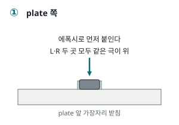
① plate 받침 포켓 2곳에 먼저 붙인다(같은 극이 위). 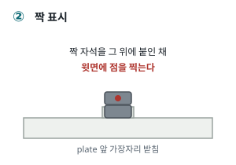
② 짝 자석을 붙여 둔 채 윗면에 점을 찍는다. 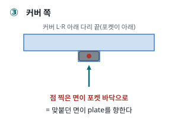
③ 점 찍은 면이 포켓 바닥으로 가게 커버 다리 끝에 붙인다. 보스 자석 6개는 극성 무관.


mount 맞추기 · 처음 한 번, 그리고 mount나 plate를 바꿨을 때
- 03
mount에 지지대 고정
케이스 밖에서 팔각형 랜드 중앙의 육각 포켓에 M3 지지대를 넣고 아래에서 M3×5로 조인다. 좌 pair는 SO1·SO2, 우 pair는 SO4·SO5, Rear는 SO3, Front는 SO6이다.
확인지지대가 육각 포켓 바닥(Z 2)에 밀착되고 아래 나사 머리가 원형 받침면에 고르게 닿는다. 조인 지지대는 돌지 않는다.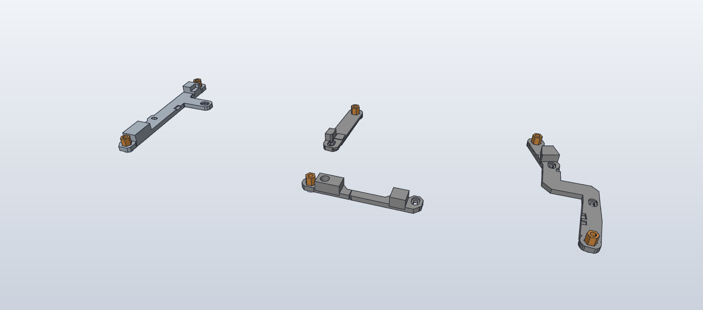
- 04
케이스 나사를 가볍게
mount 4개를 하우징 지지대에 놓고 케이스 나사 6개를 손으로만 돌린다. 좌 pair는 H05·H01, 우 pair는 H06·H04, 중앙은 H02, 앞은 H03이다. 장공 방향은 H01·H05가 X, 나머지가 Y다.
확인모든 나사가 억지 없이 걸린다.안 맞으면안 걸리면 그 장공 방향으로 어긋난 것이다. 장공을 줄로 늘리거나 그 mount만 다시 출력한다.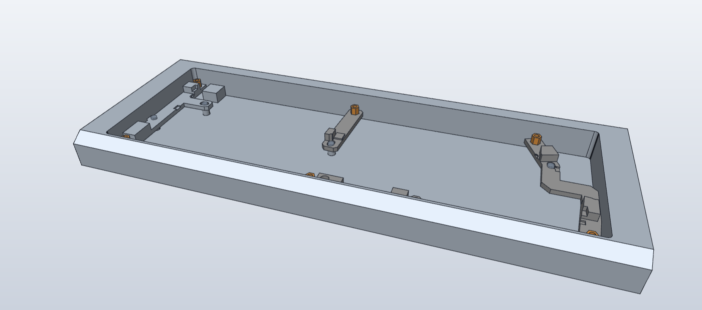
- 05
plate 앞 이음 맞추기
- 오른쪽 조각 아랫면의 육각 포켓에 M2 너트를 눌러 끼운다. 위에서 M2×5를 꽂아 몇 바퀴 물린 뒤 당기거나 플라이어로 눌러 포켓 바닥까지 넣는다. 한 번 끼운 너트는 그대로 둔다.
- 오른쪽 조각을 윗면이 위로 오게 놓고, 왼쪽 조각을 위에서 내려 tab을 오른쪽 포켓에 얹는다. 옆으로 밀어 넣지 않는다(끝의 걸림 턱 때문에 위에서만 들어간다).
- tab 위 카운터보어에서 M2×5를 조인다. 너트 위 살이 1.3 mm이므로 세게 조이지 않는다.
- 이음 쿠폰에서 정한 대로 손질한 상태여야 한다(주문 1 시험).
확인윗면 단차가 손톱에 걸리지 않고, 나사머리가 윗면 아래에 묻힌다.안 맞으면빡빡하면 tab(plate)을 깎지 말고 포켓 안 가루부터 털어 본다. 그래도 안 들어가면 주문 1 이음 쿠폰 결과와 비교해 기록하고 멈춘다. 헐거우면 그대로 두고 조립 11에서 접착을 정한다. 너트가 헐거워 빠지면 포켓 벽에 에폭시를 조금 발라 고정한다(나사산에 묻히지 않게).위에서 본 앞 이음. 녹색이 왼쪽 조각이다. - 06
spine으로 이음부 아래 잇기
앞 이음을 조인 plate를 뒤집어, 이음부 밑에 spine을 대고 M2×6 4개와 너트로 잇는다. 스위치와 배선 전이어도 된다.
확인이음부가 억지 없이 닫히고 SO3·SO6 자리는 왼쪽 조각에 있다.안 맞으면빡빡하면 spine 쪽을 다듬거나 spine만 다시 출력한다.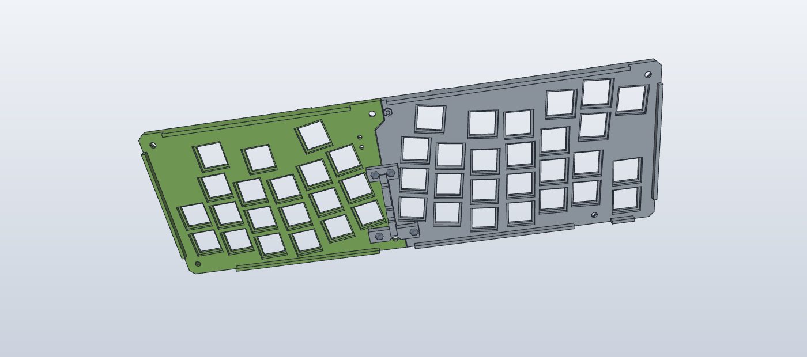
아래에서 본 모습. - 07
plate 임시 장착으로 위치 맞추기
이은 plate를 mount 위에 얹는다. 지지대 구멍과 받침 7곳이 힘을 가하지 않아도 맞는지 확인한다. Rear의 plate 받침 접촉과, spine 밑면과 Rear 프레임 윗면 사이 틈을 각각 확인한다. 좌·우 mount의 핀 회피부에서 스위치 다리와 mount 사이 여유를 본다. / 뒤 받침 블록(공칭 높이 4.5)을 케이스 뒤 벽 보스 ①②③ 위에 붙이지 않은 채 올리고 plate를 얹는다. 블록 뒷면은 plate 뒤 가장자리 선에 맞춘다. 블록 윗면과 plate 뒤 플랜지 밑면 사이 틈을 필러 게이지로 잰다(설계 0.5 = 패드 자리). 높이 3종(4.2 / 4.5 / 4.8)과 패드 두께를 골라 틈을 메우고, 패드로 블록을 보스 윗면에 붙인다. 우 mount 뒤 모서리가 보스 ④에 얹혀 흔들리지 않는지도 본다.
확인나사 없이 지지대 구멍 6곳이 맞고, plate가 받침 위에서 흔들리지 않는다. 뒤 받침 블록 3곳은 플랜지 밑면에 가볍게 닿는다(블록이 먼저 닿아 plate가 지지대에서 뜨지 않는다).안 맞으면pair의 두 지지대 간격이 plate와 다르면 mount 쪽 포켓을 줄로 넓힌다(열린 항목 「pair의 지지대 간격」). 블록이 보스를 벗어나거나 plate를 들면 plate는 깎지 말고 낮은 블록·얇은 패드로 바꾼다. 그 보스의 위치·높이를 재어(M22) 다음 출력의 블록 치수를 정한다.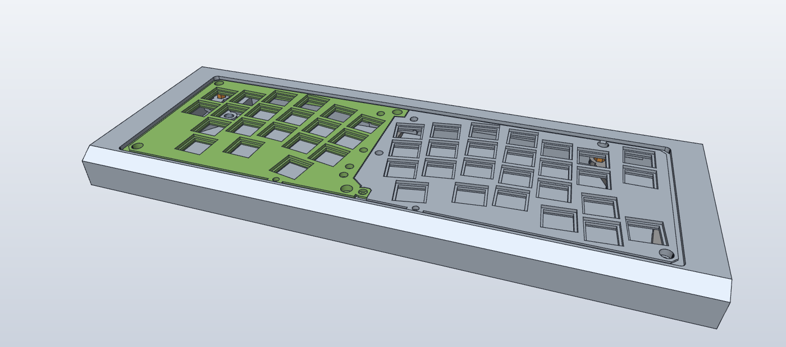
- 08
plate를 떼고 케이스 나사 조이기
공구가 닿지 않으면 plate를 들어낸 뒤 케이스 나사 6개를 조인다. 나사가 1개뿐인 중앙·앞 mount가 조이는 동안 돌지 않았는지 본다. USB 아웃렛은 r2 때 케이스에 붙여 둔 그대로 쓴다. 글루 덩어리가 좌 pair에 닿으면 깎는다.
확인조인 뒤 plate를 다시 얹어도 6곳이 맞는다.


plate 모듈
- 09
스위치 46개 끼우기
plate 조립품을 작업대에 두고 위에서 끼운다. 걸쇠가 14.0 홀 층(1.5) 아래 릴리프에 걸리고, 플랜지는 plate 윗면보다 1.7 mm 아래(16.5 개구 안)에 앉는다.
안 맞으면plate 홀은 깎지 않는다. 빡빡하면 다른 스위치로 바꿔 보고, 헐거우면 배선이 잡아 주므로 그대로 둔다. 어느 쪽이든 키 번호를 기록해 다음 plate 리비전 값에 반영한다.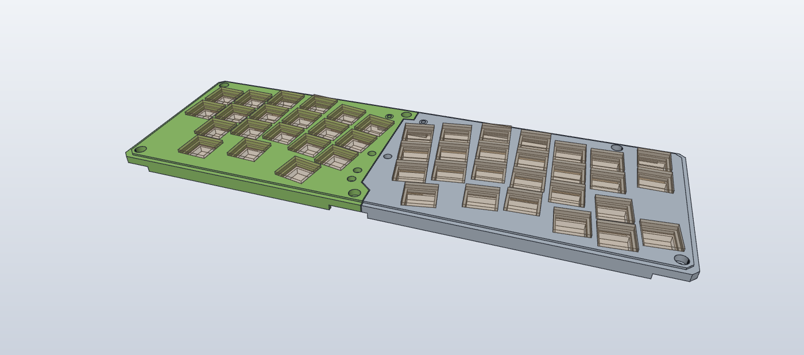
- 10
컨트롤러 브래킷 · Pro Micro 끼움 확인
- 브래킷을 plate 아랫면에 M2×6 2개와 너트로 단다. 너트는 아래가 열린 육각 포켓에 넣어 손가락으로 받치고 plate 위에서 조인다.
- 1·23번 스위치의 Pro Micro 쪽 플라스틱 PCB 다리를 니퍼로 밑동까지 자른다(그림 ④의 빨간 점). 그대로 두면 PCB 모서리를 누른다(검토 CAD 0.86 mm 겹침).
- 맨 Pro Micro로 한 번 끼워 본다. 부품면(검은 칩·USB)이 케이스 바닥 쪽, USB는 −X다. 그림 ① → ②.
- 빼기는 그림 ④. 확인 뒤 빼 두고 배선 단계에서 최종으로 끼운다.
확인PCB가 위아래·앞뒤로 덜컹거리지 않고, USB 쪽으로 당기면 모서리 턱에 걸린다. 두 암의 립이 PCB 긴 변 아래에 걸려 있다.안 맞으면너무 빡빡하면 주문 1 시험편 A(얕은 걸림), 헐거우면 C(깊은 걸림)를 쓴다. 끝 립이 부품에 닿으면 립 끝을 줄로 다듬는다.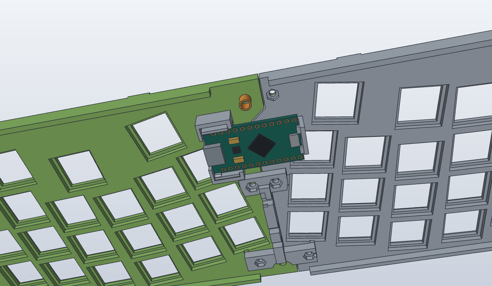
케이스 바닥 쪽에서 본 모습. USB 소켓과 검은 칩이 보이는 쪽이 부품면이다. 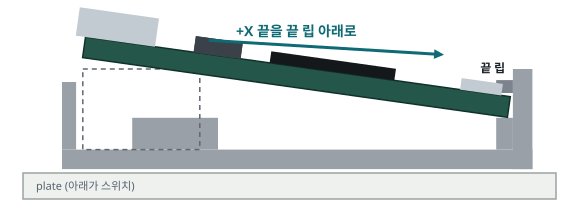
① 모듈을 뒤집어 놓고 +X 끝을 기울여 끝 립 아래로 넣는다(측면). 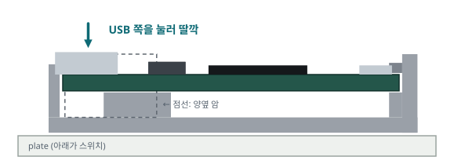
② USB 쪽을 누르면 양옆 암이 벌어졌다가 PCB 긴 변 위로 걸린다. 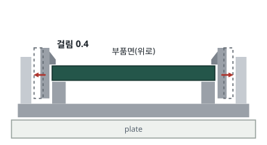
단면. 점선은 끼울 때 벌어진 암(바깥으로 0.7), 립은 PCB 가장자리를 0.4 덮는다. 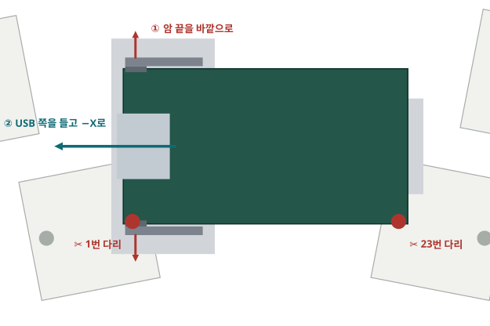
모듈을 뒤집은 상태. 빼기: 양옆 암 끝을 벌리고 USB 쪽을 들어 −X로. 빨간 점은 처음 끼우기 전에 자르는 1·23번 스위치 다리. - 11
가조립 누름 시험 → 이음 접착 여부
- 스위치와 브래킷을 단 상태에서 가운데 아래쪽 키와 이음 가까운 키를 눌러 본다.
- 이음부에 단차가 생기거나 삐걱이면 앞 이음 M2를 풀고 tab 아래·옆을 사포로 거칠게 하고 탈지한 뒤 2액형 에폭시를 바르고 다시 조인다. 나일론은 매끈하면 잘 붙지 않는다. 핫멜트는 쓰지 않는다.
- 괜찮으면 나사만으로 둔다(나중에 한쪽만 바꿀 수 있다).
확인눌러도 이음부 윗면이 벌어지거나 어긋나지 않는다.안 맞으면접착 뒤에도 움직이면 spine M2와 브래킷 M2가 다 조여졌는지 본다. - 12
배선
- 배선 지도대로 4행 × 12열을 잇는다. 같은 색 키가 한 행 선, 같은 C 번호가 한 열 선이다(펌웨어 JSON의 행·열).
- 다이오드는 키마다 하나, 검은 띠가 행 쪽이다(펌웨어 COL2ROW).
- Pro Micro는 브래킷에서 뺀 채 납땜면 패드 5–12번(양쪽 16곳)에 붙인다. 1–4번은 쓰지 않는다. 12번 전선이 +X로 갈 때는 끝 벽 옆(패드 줄 위치)으로 지나게 한다.
- 행 선이 이음을 건너는 곳은 spine 줄기 아랫면 홈(Y 49·64·72)으로 보낸다. 배선을 시작하면 두 조각을 다시 벌리기 어렵다.
- inside 케이블 플러그를 Pro Micro에 꽂은 뒤 조립 10처럼 +X 끝부터 넣고 USB 쪽을 눌러 끼운다.
확인mount 자리(지도의 빗금)와 plate 사이에 배선이 없다. spine·브래킷을 지나는 배선은 부품에 눌리지 않고, 브래킷 암·끝 벽에 끼지 않는다.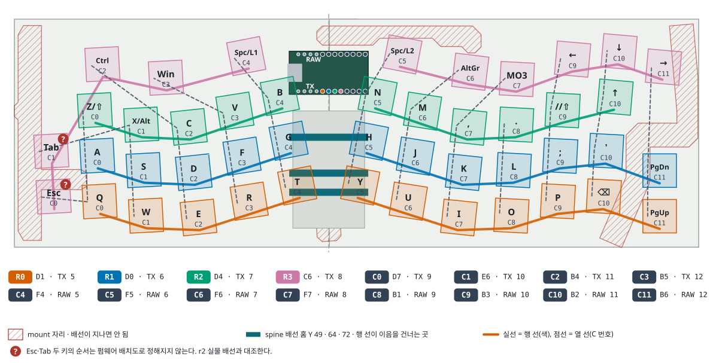
아랫면 배선 지도(모듈을 뒤집은 상태). 같은 색 키를 한 행 선으로, 같은 C 번호를 한 열 선으로 잇는다. 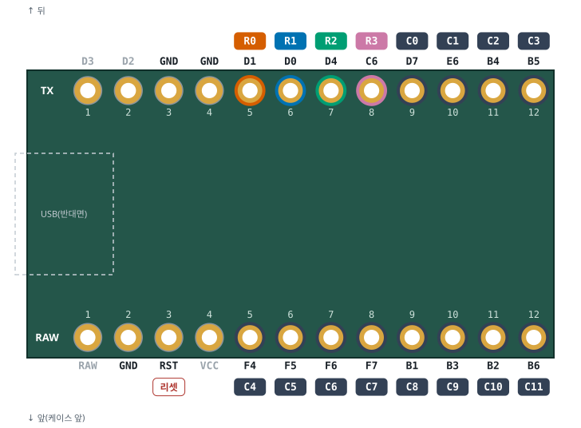
납땜면(plate 쪽) — 전선을 붙이는 면. 패드 5–12번 양쪽 16곳만 쓴다. 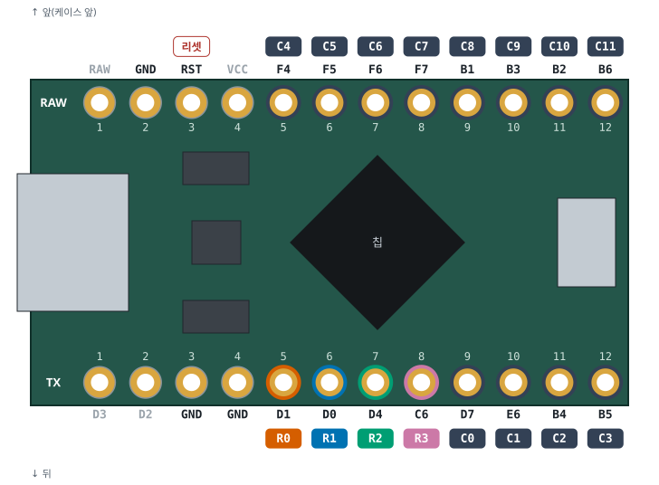
부품면(케이스 바닥 쪽) — 브래킷에 끼운 뒤 보이는 면. RST를 GND에 두 번 대면 기록 모드. 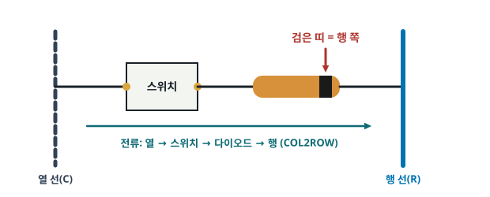
다이오드는 검은 띠가 행 선 쪽(펌웨어 COL2ROW). - 13
펌웨어 기록 · 46키 전기 시험
- inside 케이블로 PC에 잇고
firmware/46es_kbfirmware.json(KBFirmware 형식, ATmega32U4)으로 만든 펌웨어를 QMK Toolbox 등으로 기록한다. 기록 모드는 RST 패드를 GND에 두 번 빠르게 댄다(핀 배치 그림의 「리셋」). - 케이스에 넣기 전에 키를 하나씩 눌러 시험표의 칸을 지운다.
- 안 되는 칸은 아래 증상 그림으로 원인을 찾는다. Esc와 Tab만 바뀌어 나오면 배선이 아니라 펌웨어 배치를 고친다.
확인46칸이 모두 입력되고, 누르지 않은 키가 함께 입력되지 않는다.안 맞으면다시 납땜한 곳이 브래킷 암·끝 벽에 닿지 않는지 본다.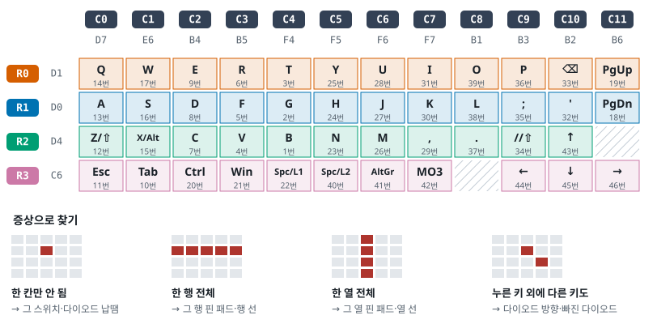
키를 하나씩 눌러 표의 칸을 지운다. 빈 칸(빗금)은 키가 없는 자리. - inside 케이블로 PC에 잇고


합치기
- 14
plate 모듈 장착
Rear 프레임 윗면의 spine 자리에 shim을, 케이스 뒤 벽 보스 ①②③ 윗면에 시험 조립에서 고른 패드를 붙이고 plate 모듈을 지지대에 얹은 뒤 위 M3×4(탄소강) 6개를 조인다. inside 케이블은 하우징 뒤쪽 USB 아웃렛으로 보낸다.
확인plate가 하우징 벽 어디에도 닿지 않는다(설계 틈 0.3). 위·아래 나사 끝이 서로 닿지 않는다(공칭 0.5).안 맞으면벽에 닿으면 plate를 깎지 말고 닿는 쪽 mount를 케이스 나사 장공 안에서 반대로 옮긴다(조립 04–08).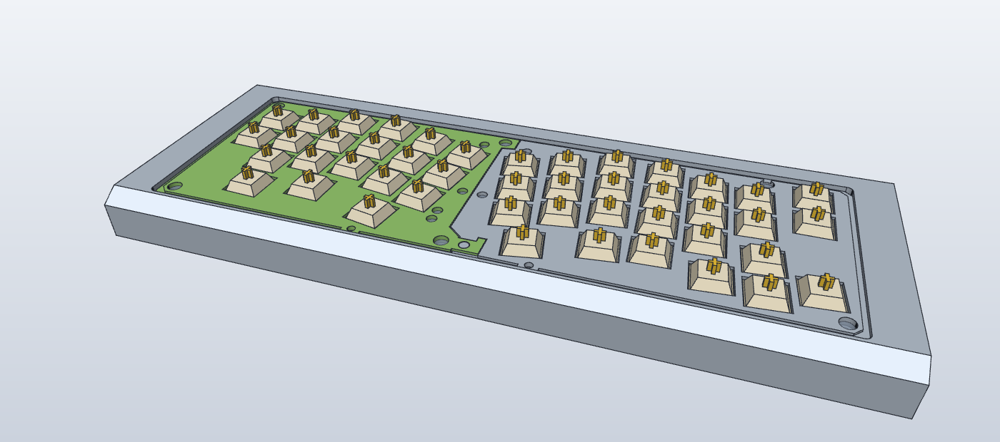
- 15
- 16
키캡
그림의 주황 세 자리만 폭이 다르다(1.25u · 2.25u · 2u). 나머지는 1u이고 스태빌라이저는 쓰지 않는다.
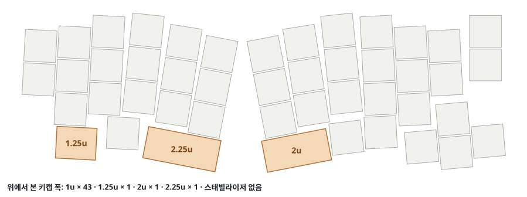
폭이 다른 키캡 3개의 자리(위에서 봄).


근거 · model/print_v5/README.md · tools/coupon_v5.py
정비할 때
- 01
USB 케이블을 뺀다
- 02
커버를 벗긴다
자석은 L·R 조각의 바깥 끝(보스)과 아래 다리 끝(v5)에 있다. 위 다리 끝(자석 없음)이나 T 조각 가운데를 들어 벗긴다. 키캡이 걸리면 그 키캡만 먼저 뽑는다.
- 03
위 M3×4 6개만 푼다
mount, 지지대, 케이스 나사는 하우징에 그대로 남는다.
- 04
plate 모듈을 꺼낸다
plate 두 조각, spine, 스위치, 배선, Pro Micro가 한 덩어리로 들린다. 조금 들어 올린 상태에서 inside 케이블 플러그를 뽑는다.
- 05
Pro Micro만 바꿀 때
꺼낸 모듈을 뒤집어 USB 쪽 양옆 스냅 암 끝을 바깥으로 벌리고, USB 쪽을 들어 올린 뒤 PCB를 −X로 빼 끝 립에서 꺼낸다. 배선은 Pro Micro에 붙은 채 나온다. 스위치 납땜은 건드리지 않는다.
- 06
mount나 plate를 바꿀 때
케이스 나사를 풀어 해당 mount만 바꾸고, 조립 03–08(mount 맞추기)을 다시 한다. 앞 이음을 접착했다면 plate는 두 조각을 함께 바꾼다.
근거 · docs/design.md · docs/validation.md · model/measurements.csv
주문 1 시험
전체 케이스 지그(jig A)는 쓰지 않는다. 실제 mount 4개가 같은 것을 더 많이 확인한다. 주문 1의 시험물과 mount로 먼저 확인하고, 결과를 v5에 반영한 뒤 주문 2를 넣는다. 부품을 눌러 억지로 맞춘 결과는 합격으로 치지 않는다. 시험물은 대신하는 부품과 같은 재료·색으로 뽑는다(B 쿠폰·이음 쿠폰은 검정 MJF PA12S, 보스 탭은 투명 레진).
| 시험 | 출력물 | 확인과 채택 기준 | 상태 |
|---|---|---|---|
| 스위치 홀 | B 쿠폰 행 A·B·C | Gateron Milky Yellow 삽입력, 걸쇠, 키캡 뽑을 때 딸려 나오는지. 행 C는 플랜지가 평평하게 앉는지와 홀 가장자리 처짐 → TBD_sw_hole. 행 C는 plate와 같은 상부층 1.7이므로 실제 키캡까지 끼워 끝까지 눌러 본다 | 주문 1 전 |
| 나사·포켓 | B 쿠폰 행 D | M2·M3 구멍 통과, 카운터보어(5.8 / 6.0 / 6.2)에 버튼헤드가 앉는지, 육각 포켓(5.2–5.8)에 지지대가 미끄러지되 돌지 않는지 | 주문 1 전 |
| 커버 보스·자석 | 보스 탭 + B 쿠폰 카운터보어 | 보스 끼움, 보스 벽(1.1)이 깨지지 않는지, Ø3 자석이 평면 포켓 3.2 / 3.3 / 3.4(레진)와 B 쿠폰 다리 자석 포켓 3.2 / 3.3 / 3.4(MJF) 중 어디에 맞는지, 자석을 붙이고 탄소강 M3×4를 넣은 상태에서 뒤집어도 붙어 있는지, 레진의 투명도·기포·받침 자국과 자석이 비쳐 보이는 모습. 외관면의 로고 음각(획 0.5 / 0.8, 살 0.25 / 0.4)이 메워지지 않고 살이 남아 읽히는지 → 커버 L 로고 크기 | 주문 1 전 |
| 축척 오차 | B 쿠폰 외곽 | 145.35 × 74.15 × 5를 재어 오차율을 구하고 plate 외곽 틈을 다시 본다 | 주문 1 전 |
| 컨트롤러 스냅 | 스냅 브래킷 A·B·C + 실제 Pro Micro | 맨보드로 끼움·해제 → 16선 납땜 후 plate·mount를 단 상태에서 끼움·해제(암 접근), USB 쪽 당김에 모서리 턱, 끝 립이 부품에 닿지 않는지, 10회 탈착 뒤 암 균열·처짐 → 걸림 깊이 선택(A 0.25 / B 0.4 / C 0.55) | 주문 1 전 |
| 앞 이음 | 이음 쿠폰 3쌍(S0 옛 dovetail, S1 현행 반턱, S2 넓힌 여유) + M2×5·너트 | 나사 없이 손으로 5회 모두 끝까지 앉는지, 조인 뒤 윗면 단차(0.20 이하)·흔들림·누름, 10회 탈착 뒤 변화 → 이음 여유(S1 0.15 / S2 0.25, 업체 권장 0.2–0.4). 너트를 눌러 끼운 뒤 나사를 빼고 뒤집어 흔들어 빠지지 않는지, 조일 때 헛돌지 않는지 → 포켓 맞변(S1 4.0 / S2 4.2, S0 4.4는 열린 포켓) | 주문 1 전 |
| 케이스 체결 | mount 4개(실부품) | 케이스 나사 6곳이 장공 안에서 들어가는지, 지지대가 포켓에서 돌지 않는지, 앞 mount(69.8 mm) 굽힘, pair 연결부(폭 8) 층간, H05 조정 끝 살 | 주문 1 전 |
| 중앙·컨트롤러·스위치 | 주문 2 부품 | 이음부 닫힘과 shim, 1·23번 스위치 다리 절단과 Pro Micro 모서리, 실제 스위치·다이오드·키캡 스트로크와 커버 간섭 | 주문 2 후 |
근거 · docs/design.md · docs/validation.md · model/measurements.csv
실측 현황
2026-11-05 사용자 결정으로 정밀 실측 대신 GH60 값을 쓴다(케이스 구멍 좌표 [GH60 채택 2026-11-05], 실측값 아님). 아래는 기록이다. 주황은 2026-11-04 1차 기록(150 mm 캘리퍼 대략값)이고 확정으로 세지 않는다. 맞는지는 주문 1에서 확인한다.
M01하우징 내측 폭1차 286 · 대략값
M02하우징 내측 깊이1차 96 · 대략값
M03내측 코너 R미확정
M04외형·경사문서값
M05내부 높이·테두리H01 5.5 · 테두리 14
M06벽 두께·수직도미확정
M07벽 → GH60 기준점미확정
M08체결 구멍 6곳 좌표GH60 채택 · 1차는 참고
M09케이스 나사 규격호칭경 2
M10지지대 외경·높이H01 외경 5 · 참고
M11아크릴 스위치 홀실측 생략 결정
M12키 간격·각도미확정
M13스탠드오프 형식암-암 맞변 4.33–4.5 · 나사 접시머리(자석 붙음)
M14배선 공간배선 8 · 대략값
M15컨트롤러 보드Micro-B · 높이 4
M16USB 개구부·플러그미확정
M17키캡·커버 간섭미확정
M18출력 보정(쿠폰)주문 1 쿠폰으로
M19스위치 걸쇠모델명만 확정
M20현물 키 배치 대조수량만 확인
M21r2 판 두께·적층미실측
M22뒤 벽 안쪽 반원 보스 4개: 중미측정(사진 추정)